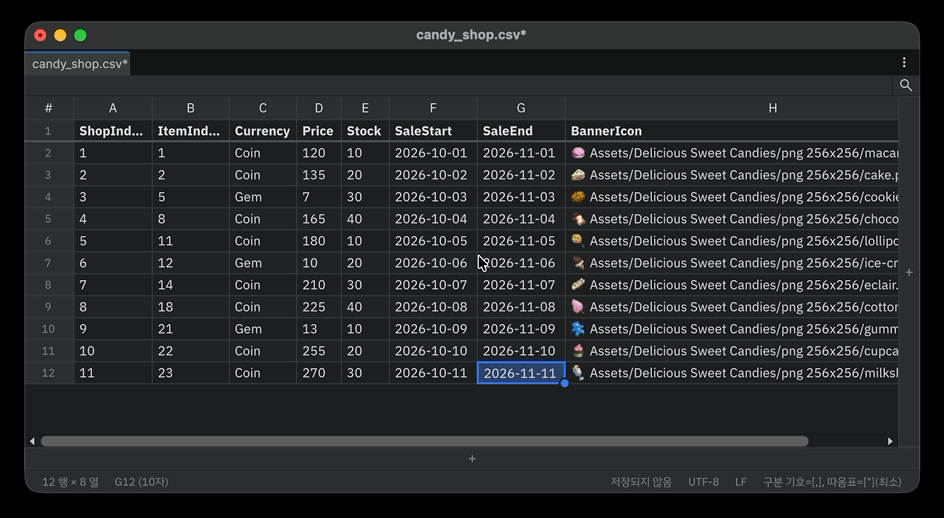
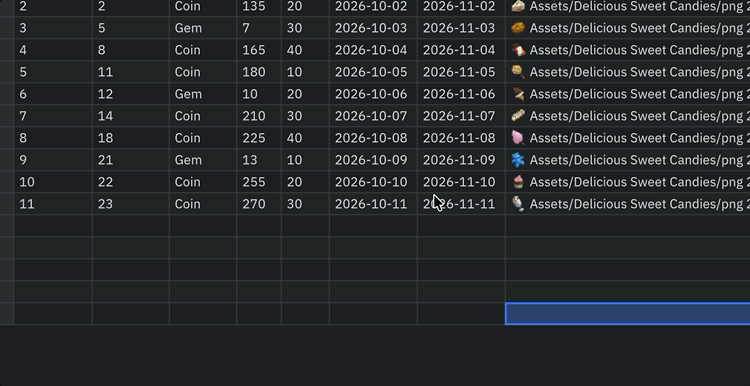

Editing
Edit cells
- Select a cell and start typing to replace its value. F2 or a double-click edits the existing value with the caret at the end.
- The edit field opens two rows tall over the cell. As the text grows it widens to the right edge of the table, then wraps and grows downward.
- Alt+Enter (Option+Enter on macOS) inserts a line break inside the cell without committing.
- With a range selected, type a value and press Ctrl+Enter (Cmd+Enter on macOS) to put it into every selected cell.
- Press Esc to cancel the edit.
Every change can be undone step by step with the table's own Undo (Ctrl+Z). It never mixes with Unity's Scene Undo.
Rows and columns
| Task | How |
|---|---|
| Add at the end | The + buttons at the right and bottom edges |
| Add rows above/below | Ctrl+Alt+↑ / ↓, or right-click Insert Row Above / Insert Row Below |
| Add columns left/right | Ctrl+Alt+← / →, or right-click Insert Column Left / Insert Column Right |
| Duplicate rows | Ctrl+D, or right-click Duplicate Row (copies the selected rows just below) |
| Move rows/columns by one | Alt+↑ / ↓ (rows), Alt+← / → (columns) |
| Delete | Ctrl+-, right-click Delete Row / Delete Column, or select whole rows/columns and press Delete |
- With several rows or columns selected, that many are added or deleted at once.
- With a cell range selected, Delete clears only the contents; Ctrl+- deletes the rows the range covers.
- Rows don't move across the boundary between header rows and body rows.
- The last remaining row or column can't be deleted.
Sort
Choose Sort Ascending / Sort Descending from the ▼ button on a column title or from the column title context menu.

- Columns of numbers sort by value (
1, 2, 10), ISO dates sort as dates, and everything else sorts as case-insensitive text. - Empty cells always go last, in either direction. Equal values keep their original order.
- Header rows are excluded. One Undo restores the previous order.
Fill handle
Drag the round handle at the bottom-right of the selection down, up, right or left to fill the new cells. A light blue box shows the range while you drag; dragging outside the table scrolls in that direction.
| Source | Filled values |
|---|---|
Two or more numbers (1, 3) |
Continue the step (5, 7) |
Text ending in a number (spr_buff_1000, item_007) |
Count on by 1, keeping zero padding (spr_buff_1001, item_008); counts down when dragging up or left |
| A single number, other text | Copy; repeat in order when there are several |
Hold Alt (Option on macOS) when releasing to swap continuing and copying. Dragging a single number (1000) with Alt continues 1001, 1002…, like Ctrl-dragging in Excel. Filling upward from body rows stops at the header rows.

Go to a row or cell
Press Ctrl+G (Cmd+G on macOS) to open an input above the table.
| Input | Goes to |
|---|---|
120 |
Row 120 (same column) |
C120 |
Column C, row 120 |
120:3 |
Row 120, column 3 |
Numbers past the end go to the last row or column. Input that can't be read turns the field red. Press Enter to go; press Esc or click outside to close.

Copy and paste
The clipboard always holds a tab-separated rectangle, even when the file is a CSV, so you can copy to and from Excel, Google Sheets and Numbers directly.